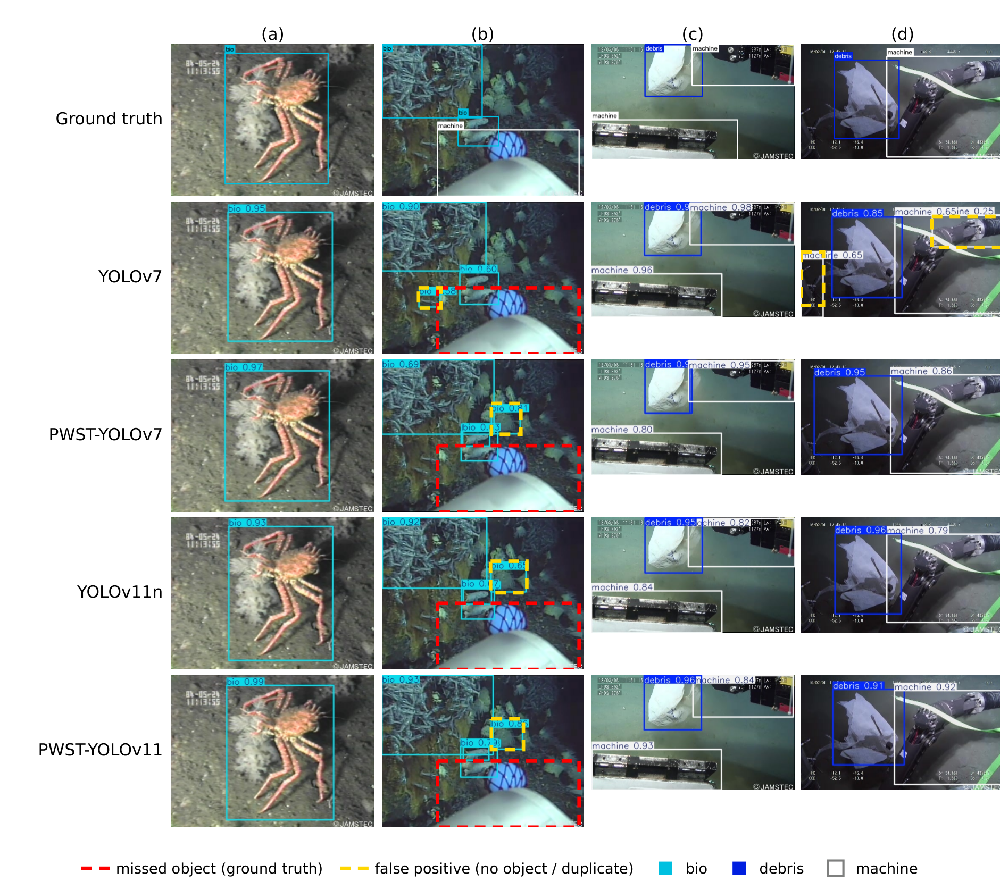
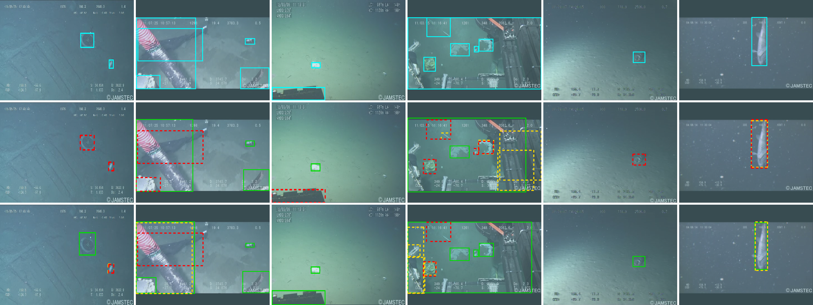
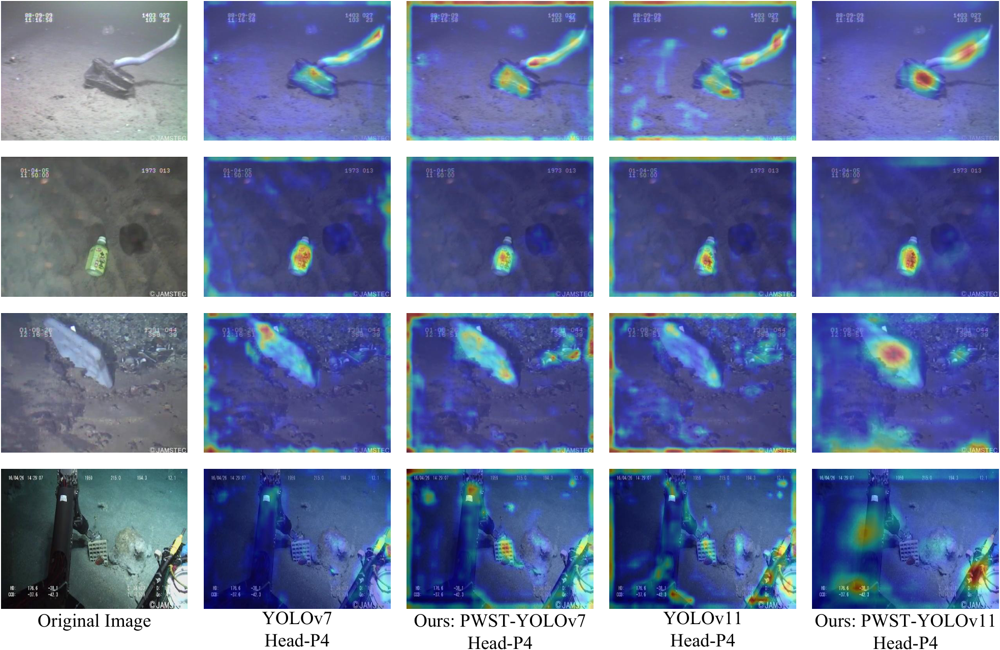
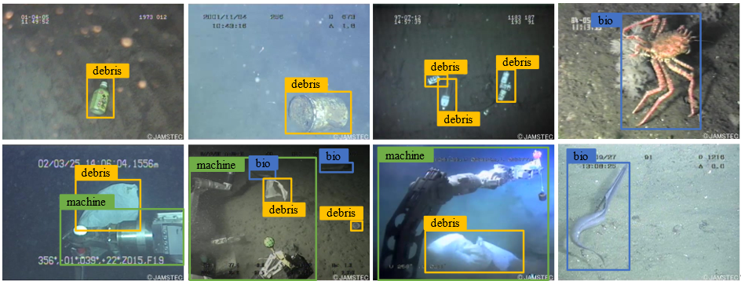
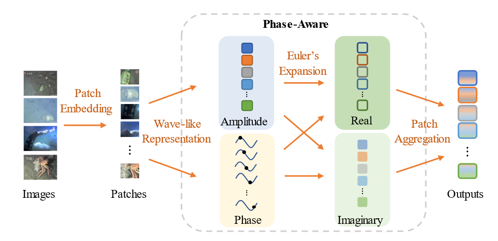
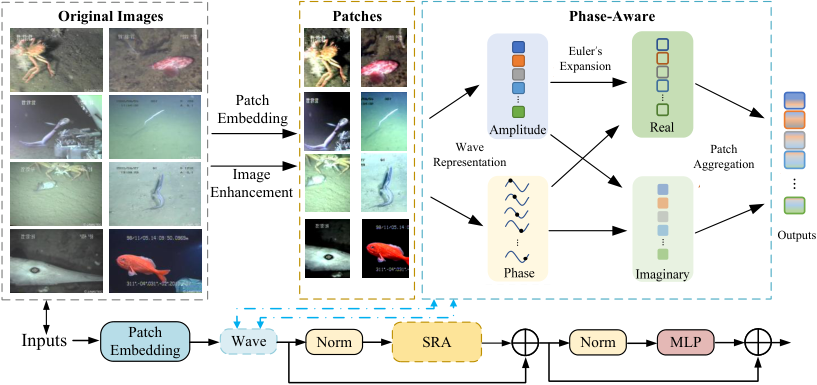
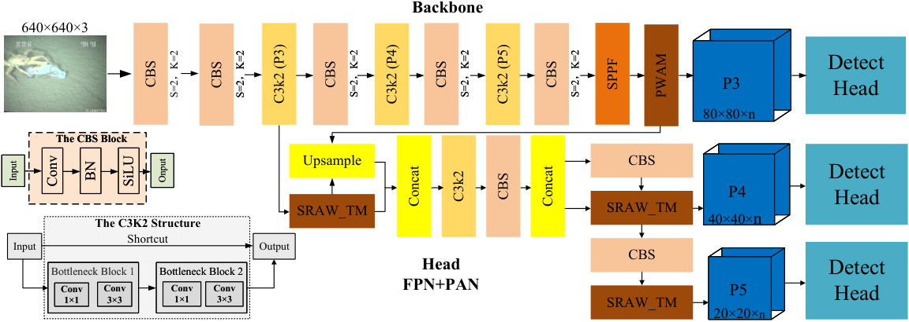

Overview
Turbidity, backscatter and the absorption of red light change the mean and the contrast of each colour channel of an underwater image. We propose a gated input standardization (GIN) for YOLOv11n. It standardizes each colour channel of the input image and blends the result with the image through a learnable gate, so that part of the network input stays the same under these degradations. We also study two modules for the detector, the phase-aware wave-like aggregation module PWAM and the transformer module with space-reduction attention SRAW-TM. All models were trained under one protocol with several seeds on our mini-Trash dataset and on TrashCan.
Gated input standardization
Turbidity adds a veiling light and attenuates the image, I′ = It + A(1 − t), a loss of contrast scales the deviations from the mean, and the absorption of red light scales the red channel. All three are affine changes of each colour channel, x′c = αcxc + βc with αc > 0. A per-image standardization of each channel is unchanged by such a change. GIN adds this standardized image to the input of the first convolution of YOLOv11n:
x̃c = xc + ac ( s (xc − μc) / √(σc2 + ε) + m − xc ), m = 0.4, s = 0.18, ε = 10−3
μc and σc are the mean and the standard deviation of channel c over the image, and the gate ac is learned per channel and initialized at 0.5. GIN has three parameters, is active at training and inference time and leaves the COCO weights of the rest of YOLOv11n unchanged. After training the gates are 0.29 ± 0.04 on mini-Trash and 0.18 ± 0.03 on TrashCan, so the network input keeps most of the image and adds the standardized component. Blur, defocus, motion and JPEG compression are not affine changes of the channels, and GIN is not designed for them.
Detection under degradation
mAP50 in % on the test split under 21 synthetic corruptions, GIN against YOLOv11n, both with light augmentation, that is without mixup and shear. mini-Trash: ten seeds each. TrashCan: seeds 10 to 14. The nine named conditions are blur, contrast reduction and turbidity.
| mini-Trash | TrashCan | |||||||
|---|---|---|---|---|---|---|---|---|
| Condition | YOLOv11n | GIN | Diff. | Welch p | YOLOv11n | GIN | Diff. | Welch p |
| Gaussian blur, σ = 1 px | 89.5 | 89.6 | +0.1 | 0.79 | 67.0 | 71.0 | +4.0 | 0.05 |
| Gaussian blur, σ = 2 px | 80.1 | 79.6 | −0.5 | 0.65 | 43.6 | 44.3 | +0.8 | 0.66 |
| Gaussian blur, σ = 3 px | 61.5 | 60.5 | −1.0 | 0.49 | 28.6 | 26.3 | −2.3 | 0.16 |
| Contrast reduction, α = 0.7 | 89.0 | 89.8 | +0.7 | 0.10 | 70.7 | 76.0 | +5.3 | 0.11 |
| Contrast reduction, α = 0.5 | 88.3 | 89.2 | +0.9 | 0.02 | 59.7 | 71.6 | +11.9 | 0.01 |
| Contrast reduction, α = 0.3 | 84.7 | 87.0 | +2.2 | < 0.001 | 30.7 | 50.6 | +19.9 | < 0.001 |
| Turbidity, t = 0.8 | 89.0 | 89.6 | +0.6 | 0.12 | 63.0 | 72.4 | +9.3 | 0.03 |
| Turbidity, t = 0.6 | 85.6 | 87.6 | +2.0 | < 0.001 | 31.4 | 53.3 | +21.9 | < 0.001 |
| Turbidity, t = 0.4 | 76.6 | 82.9 | +6.3 | < 0.001 | 11.1 | 23.8 | +12.7 | < 0.001 |
| Mean of the nine named | 82.7 | 84.0 | +1.3 | 0.008 | 45.1 | 54.4 | +9.3 | 0.002 |
| Motion blur, 9 px | 77.9 | 76.5 | −1.5 | 0.21 | 47.2 | 48.8 | +1.6 | 0.20 |
| Motion blur, 17 px | 51.7 | 49.1 | −2.7 | 0.17 | 21.3 | 22.1 | +0.8 | 0.58 |
| Motion blur, 25 px | 37.9 | 36.3 | −1.6 | 0.42 | 13.9 | 14.9 | +1.0 | 0.42 |
| Defocus, radius 2 px | 89.0 | 89.1 | +0.1 | 0.72 | 64.3 | 69.0 | +4.8 | 0.03 |
| Defocus, radius 4 px | 77.6 | 76.3 | −1.3 | 0.24 | 40.8 | 40.5 | −0.3 | 0.85 |
| Defocus, radius 6 px | 57.8 | 56.0 | −1.8 | 0.27 | 24.8 | 22.3 | −2.5 | 0.07 |
| JPEG, quality 30 | 87.9 | 86.7 | −1.2 | 0.01 | 72.4 | 75.1 | +2.7 | 0.27 |
| JPEG, quality 15 | 75.5 | 72.0 | −3.4 | 0.004 | 67.6 | 68.6 | +1.0 | 0.73 |
| JPEG, quality 8 | 46.1 | 41.6 | −4.5 | 0.02 | 49.3 | 48.5 | −0.8 | 0.80 |
| Red-channel attenuation, gain 0.8 | 87.2 | 88.7 | +1.5 | 0.001 | 63.6 | 70.9 | +7.3 | 0.10 |
| Red-channel attenuation, gain 0.6 | 82.8 | 85.8 | +3.0 | < 0.001 | 54.4 | 62.3 | +7.9 | 0.12 |
| Red-channel attenuation, gain 0.4 | 78.5 | 82.4 | +3.8 | < 0.001 | 50.5 | 57.0 | +6.6 | 0.18 |
| Mean of the twelve additional | 70.8 | 70.0 | −0.8 | 0.26 | 47.5 | 50.0 | +2.5 | 0.22 |
On mini-Trash the gain of GIN grows with the strength of turbidity and contrast reduction and reaches 6.3 points under turbidity with t = 0.4. On TrashCan GIN raises the nine named conditions by 9.3 points, with the largest gain of 21.9 points under turbidity with t = 0.6, and the clean test mAP50 changes by +2.7 points, 76.8 against 74.1%, with p = 0.30. GIN does not help against blur, motion blur and defocus, and under JPEG compression with quality 8 it is 4.5 points below YOLOv11n on mini-Trash, with p = 0.02.
Qualitative results under turbidity



Clean accuracy on mini-Trash
Test split, mean and standard deviation over n seeds under one training protocol, with the mean mAP50 over the nine named and the twelve additional corruptions. Parameters and GMACs for a 640×640 input.
| Model | n | mAP50 | mAP50-95 | nine named | twelve additional | Params (M) | GMACs |
|---|---|---|---|---|---|---|---|
| YOLOv11n, full augmentation | 8 | 89.3 ± 1.1 | 60.7 ± 0.7 | 83.7 ± 0.9 | 67.3 ± 1.8 | 2.59 | 3.22 |
| PWST-YOLOv11, full augmentation | 3 | 86.4 ± 1.0 | 50.4 ± 0.6 | 79.7 ± 0.4 | 59.2 ± 1.4 | 2.48 | 5.05 |
| YOLOv11n, light augmentation | 10 | 89.9 ± 0.9 | 63.7 ± 0.6 | 82.7 ± 0.8 | 70.8 ± 0.9 | 2.59 | 3.22 |
| YOLOv11n + AmpMix, light augmentation | 10 | 90.0 ± 0.5 | 64.0 ± 0.8 | 84.4 ± 1.6 | 73.9 ± 1.7 | 2.59 | 3.22 |
| SRAW-TM at P4/P5 + AmpMix, light augmentation | 10 | 90.5 ± 0.9 | 64.5 ± 1.1 | 85.1 ± 0.9 | 75.9 ± 0.7 | 3.66 | 3.56 |
| GIN, light augmentation | 10 | 89.8 ± 0.9 | 64.0 ± 1.5 | 84.0 ± 1.1 | 70.0 ± 1.9 | 2.59 | 3.22 |
With light augmentation, the clean test mAP50 of the four configurations lies between 89.8 and 90.5%, and they differ under degradation. PWST-YOLOv11 reaches 86.4 ± 1.0% test mAP50 against 89.3 ± 1.1% for YOLOv11n with 57% more GMACs. Network forward pass on an RTX 4070 Ti SUPER with batch size 1 in FP32: YOLOv11n 2.77 ms, PWST-YOLOv11 3.57 ms.
mini-Trash dataset
1006 frames from JAMSTEC J-EDI deep-sea video, 480×320, annotated as debris, bio and machine and split into 603, 201 and 202 images for training, validation and test at the frame level. About 24.3% of the test frames have a near-duplicate in the training set, so the frame-level accuracies are in-distribution results, and on a split by source clip the test mAP50 of all models falls to 43.8 to 54.4%. About 9.6% of the images are also present in TrashCan, which is therefore a second benchmark from the same source.

PWAM and SRAW-TM
PWAM represents each feature vector by an amplitude and a phase and aggregates the real and imaginary parts with learnable weights, following the phase-aware token mixing of WaveMLP. It involves no Fourier transform. SRAW-TM follows PWAM with space-reduction attention, in which the keys and values are shortened before the attention. In the ablation inside YOLOv11n under one protocol, no module variant is significantly better than YOLOv11n in mAP50 or mAP50-95.



Limitations
- The corruptions are synthetic, and the corruption comparison on TrashCan was not fixed before the runs. No model was evaluated on real turbid-water footage of other sites.
- GIN is designed for affine changes of the colour channels and lowers mAP50 under strong JPEG compression.
- mini-Trash was split at the frame level, and part of its images are also present in TrashCan, so neither benchmark measures generalization to new sites.
- The seed standard deviation of test mAP50 is about 1.1 points on the 202 mini-Trash test images and about 4 points on TrashCan, so small effects of the modules can neither be established nor excluded.
- PWST-YOLOv11 has 57% more GMACs than YOLOv11n, and no embedded platform was measured.
Reproduce
Full tutorial in the README. Tested with Python 3.12, PyTorch 2.11, Ultralytics 8.4.2.
pip install -r requirements.txt patch -p1 -d "$(python -c 'import ultralytics,os;print(os.path.dirname(os.path.dirname(ultralytics.__file__)))')" < ultralytics_patch/pwst_ultralytics.patch # register the modules unzip weights.zip -d weights # from the GitHub release python train.py --cfg configs/x_gin5.yaml --data data.yaml --name x_gin5_lightaug --seed 90 --light-aug python scripts/eval_corruptions.py data.yaml robust.json x_gin5_la_s90=runs/x_gin5_lightaug_s90/weights/best.pt python scripts/analyze_gin.py # the pre-registered test from the raw results